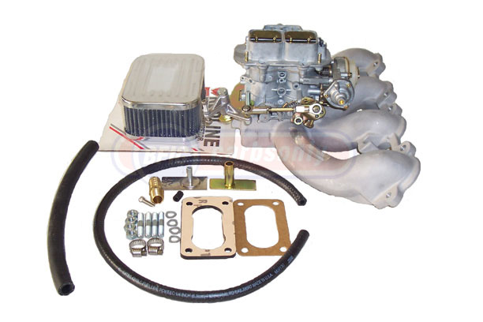

Marine Carburetor new Holley and Zenith
New Marine Carburetors
We're your best source for all the new marine carburetors and fuel system parts offered by Holley and Zenith, for all the applications these lines cover. As a factory-authorized wholesaler specializing in fuel systems, we are known for excellent service and competitve prices. Here's just a sampling of what's available. Call or email for the latest info, and be sure to tell us what you need.
|
Holley
Stock
Replacement Carburetors |
 |
|
| Holley's popular O.E. replacment 2-barrel & 4-barrel marine carburetors are specified for Ford Marine V-8's, GM V-8 and the OMC & Volvo Marine 4.3L V-6 engines. | ||
|
Holley
Universal
Marine Carburetors |
 |
|
| These Holleys are called "universal" because they'll fit so many different V-8 marine engines. Both 2-barrel & 4-barrel Marine Holleys are available. Check with us for the latest details. | ||
 |
||
| Nothing beats a Holley for pure power in performance boating and marine racing applications. World famous Double Pumpers and Dominators are available, in sizes from 600 CFM to 1250 CFM. | ||
Redline Weber |
 |
|
|---|---|---|
| We now offer performance style Weber Marine Conversion Kits for Mercruiser 4-cylinder and 4.3 liter 6-cylinder engines that came equipped with a 2-barrel Mercab. We also have new conversion Kits for Solex - equipped Volvo-Penta B18 and B20 months, and the later model "slant four" Volvo - Penta marnie engines. Kits are complete, with brand new Weber 2-barrel performance carburetor, flame arrestor, mounting harware, fuel line and fittings, and trottle linkage parts. The Volvo - Penta Kits include new intake manifolds. New Weber carburetors deliver smoother operation, increased low - end torque, greater horspower, and more top - end RPM's and range.Click link at left for more information. | ||
|
|
Zenith
Marine Carburetors |
 |
| Zenith Fuel Systems still manufactures many of the Zenith marine carburetors that were so widely used in the 1940's, '50's, & '60's. If you need a new Zenith, simply email or call. | ||

Our business is built on a foundation of quality, service and integrity.